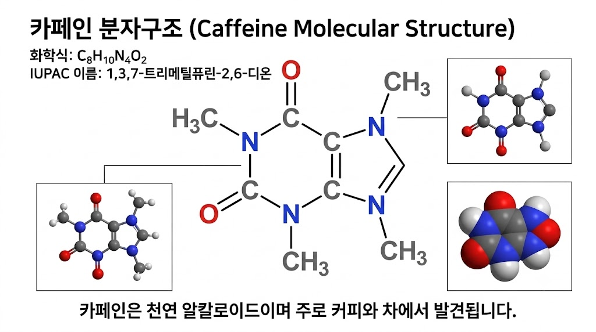

chemcheck
LLM 이 그린 화학 구조는 그럴듯하고, 자주 틀립니다.
틀렸다는 걸 아무도 모른 채 강의자료·논문·제품에 들어갑니다.

Gemini Pro 에게 "카페인 분자구조" 를 요청해 받은 그림입니다. 제목도, 화학식(C8H10N4O2)도, IUPAC 이름(1,3,7-트리메틸퓨린-2,6-디온)도 전부 맞습니다. 구조만 틀렸습니다 - N9 에 메틸이 하나 더 붙어 중성 분자로 존재할 수 없습니다.
우리는 판정에 LLM 을 쓰지 않습니다. 이름과 그림을 각각 InChIKey 로 바꿔 문자열로 비교합니다 - 추론이 없으므로 환각이 끼어들 자리가 없습니다.
버튼을 누르면 아래 파이프라인이 실제로 돕니다. 미리 만든 결과가 아닙니다.
- 1 그림을 붙여넣고 구조 영역을 지정합니다
- 2 인식기 둘이 읽고, 이름의 정본과 InChIKey 로 대조합니다
- 3 틀렸으면 정본 구조를 복사해 그대로 씁니다
이미지를 붙여넣거나(Ctrl+V) 여기로 끌어오세요 - 이름칸을 채우고, 서버가 그림도 읽어 대조합니다
RDKit 을 내려받는 중 (약 2MB, 첫 번째만)…
대조 결과 (이름 + SMILES)
대조 결과 (이미지 - 서버)
야생에서 잡은 오류 - 기록 (상호작용 없음)
이 섹션은 버튼이 없습니다 - 상호작용 없는 기록입니다. 오늘(2026-09-09) 서버가 뜨기 전, 로컬 CLI(OCSR, 인식기 둘)로 처음 실제 데이터에서 잡은 사례를 그대로 옮겨 적었습니다. 지금은 위 이미지 칸에 이 그림을 붙여넣으면 서버가 살아서 같은 방식으로 검사합니다.
🔴 오류 (기록 - 로컬 CLI 실측)
Gemini 가 그린 카페인은 N9 에 메틸이 하나 더 붙어 있다 - 그릴 수 없는 구조라 두 인식기 중 하나는 파싱조차 못 했다. 그런데도 이미지 자신이 적어 둔 화학식(C8H10N4O2)과도 맞지 않는다. 이름·인식기 둘·인쇄된 화학식, 넷 중 셋이 "탄소 8 대 9" 를 가리켰다.
개발자용 API - 지금 이 순간 살아 있습니다
이 페이지가 부르는 그 엔드포인트입니다. 별도 서버 없이 CORS 가 열려 있어 어디서든 부릅니다.
curl -X POST https://pxh7yp--chemcheck.modal.run/api/check -F "image=@structure.png" -F "name=caffeine"
{
"verdict": "mismatch", // match | mismatch | unreadable
"grade": "weak", // strong = 인식기 둘 합의
"reference": { "inchikey": "RYYVLZVUVIJVGH-UHFFFAOYSA-N", "formula": "C8H10N4O2" },
"read": { "inchikey": "CSXLFNRQOLIQAN-UHFFFAOYSA-N", "heavy_formula": "C9N4O2" },
"reasons": [ "골격이 다릅니다 (CSXLFNRQOLIQAN vs RYYVLZVUVIJVGH)",
"중원자 조성 C9N4O2 vs C8N4O2" ]
}
LLM 파이프라인에 세 줄로 들어갑니다 - 검증 안 된 구조가 사용자에게 도달하기 전에 막습니다.
r = requests.post(CHEMCHECK, files={"image": img}, data={"name": name})
if r.json()["verdict"] == "mismatch":
block(r.json()["reasons"]) # 정본으로 교체하거나 보류
API 키 발급은 문의 - 지금은 인증 없이 열려 있는 데모 엔드포인트입니다.
요금제 계획
아직 결제를 받지 않습니다. 아래는 측정된 원가 위에 세운 계획입니다.
Free
₩0
하루 10건. 교육·개인 사용.
쐐기입니다 - 강의자료를 만드는 사람이 먼저 씁니다.
Pro
월 $29
2,000건 / 배치 업로드 / PDF·PPTX(예정).
강의자료·논문·포스터를 정기적으로 만드는 개인과 연구실.
Enterprise
건당 과금
전용 엔드포인트 / SLA / 온프레미스.
화학을 다루는 LLM 제품에 넣는 출력 가드레일. 여기가 본 시장입니다.
단위 원가 판정 1건당 약 $0.002 (Modal 실측: CPU 2코어, 인식기 둘 병렬, 따뜻할 때 2~5초). 추론 모델을 호출하지 않으므로 토큰 비용이 없고, 원가가 트래픽에 선형입니다.
지금 / 다음 / 그다음
지금 동작
그림 한 장 + 이름 → 판정. 인식기 둘(DECIMER·MolScribe)이 골격에 합의해야 strong.
판정 단계에 추론이 0 입니다.
합성 50장에서 자신 있게 틀림 0건. 실제 AI 이미지 4장 중 2장에서 오류를 잡았습니다.
다음 개발 중
PDF·PPTX 를 통째로 검사합니다. 병목은 인식이 아니라 자료에서 구조를 찾아내는 분할입니다.
실측: 398장 덱의 그림 371건 중 구조식은 두세 개, 나머지는 클립아트였습니다. 그래서 지금은 사람이 영역을 지정합니다.
그다음 계획
LLM 출력 게이트웨이. 검증되지 않은 구조가 사용자에게 도달하지 못하게 합니다.
MolErr2Fix: LLM 은 자기 화학 오류를 감지 66.6% F1, 수정 11.1% BLEU 에 그칩니다 - LLM 이 LLM 을 검사하는 방식으로는 안 됩니다.